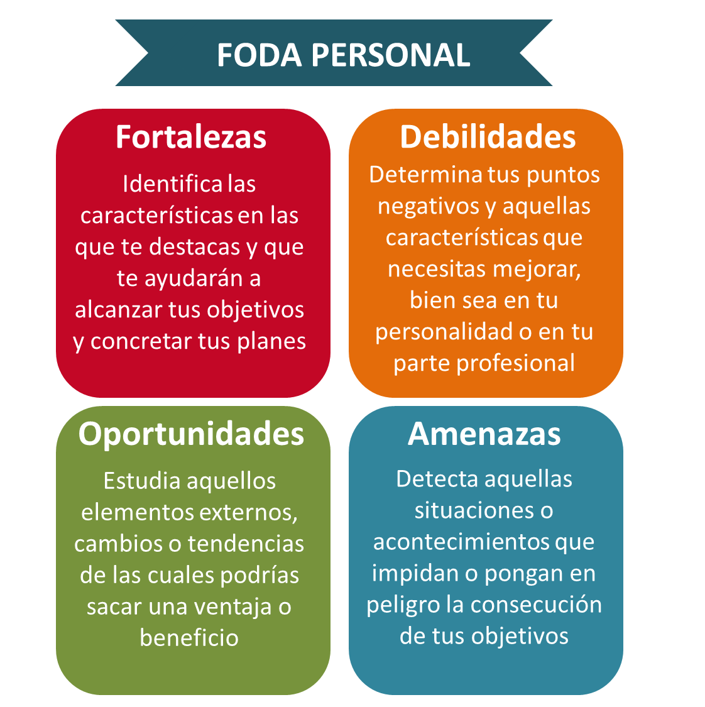

¿Qué es el FODA personal?
El FODA personal también conocido como DAFO viene de las siglas Fortalezas, Oportunidades, debilidades y amenazas. Es una herramienta de autoconocimiento adaptada a la persona y no a una empresa que le permite entender mejor sus aspectos internos(Fortalezas y debilidades), así como los externos (oportunidades y amenazas)
Este análisis influye en la toma de decisiones para el desarrollo personal y profesional del individuo
El origen del análisis FODA se atribuye a Albert Humphrey en los años 60. Inicialmente se llamó SOFT siglas por Satisfacción, oportunidad, fallos presentes y amenazas(Threats en inglés). Eventualmente evolucionó al FODA actual que es usado tanto en empresas como en personas.
Cómo hacer un FODA personal paso a paso
Para hacer un análisis FODA personal pueden usar una matriz FODA personal, es decir hacer una tabla dividida en cuatro cuadrantes para visualizar mejor cada uno de los aspectos a analizar
| F |
O |
D |
A |
| Identifica tus FORTALEZAS: Piensa en tus habilidades, talentos,capacidades y valores, en qué destacas o haces bien las cosas. |
Reconoce tus DEBILIDADES: sé honesto contigo mismo, reconoce que cosas te limitan, que te cuesta más o se te dificulta. |
Detecta OPORTUNIDADES: Si estás evaluando cambiar de trabajo o empezar estudios de postgrado, debes analizar tu entorno para detectar tendencias, demandas del mercado, posibilidades de becas o financiamientos entre muchos otros. |
Presta atención a las AMENZAS: Es importante detectar que factores pueden representar un obstáculo como competencia, cambios en tipos de contratos, crisis económicas y muchos otros. |
Ejemplo de FODA personal
Vamos a poner de ejemplo de FODA personal a alguien que quiere seguir una carrera en diseño gráfico.
| F |
O |
D |
A |
|
FORTALEZAS:Talento y creatividad, gusto por el arte. Dominio en diseño en Adobe y Phothosop
|
DEBILIDADES:Poca experienza en Marketing de redes y diseño UX/UI
Inglés básico.
Falta de dinero para adquirir hardware y software moderno.
|
OPORTUNIDADES:
Alta oferta de trabajo en Linkedln.
Cursos gratuitos o muy económicos en línea.
Empresas con clima laboral positivo.
|
AMENAZAS:
Aparición de herramientas de diseño basadas en IA.
Clientes que prefieren abaratar costos usando IA o contratar freelancers de bajo costo.
Cambios en políticas de plataformas freelance.
|
Esta matriz FODA personal pone en evidencia el contexto al cual se enfrenta una persona que desea seguier su camino por el diseño gráfico. Si bien le encanta la carrera, tiene talento y las empresas cuentan con buen clima laboral y alta demanda, aún le falta acceso a herramientas que le permitan desarrollarlo y existe la amenaza cada vez real de la inteligencia artificial, qu podría reducir la demanda y cambiar la forma en que se valoran ciertos servicios.
Sin embargo, con Objetivos claros, formación continua, originalidad y creatividad que lo diferencien, sigue habiendo un espacio para destacar, incluso en un mundo cada vez más automatizado.
Fortalezas,oportunidades,debilidades y amenazas personales
En términos generales, podemos decir que las fortalezas implican liderazgo,talentos,formación académica, buena red de contactos, mientras que las debilidades implican falta de experienza o ciertas habilidades, mal caracter o estresarse con facilidad. Las oportunidades del FODA personal tienen de ejemplo factores externos positivos como ofertas de trabajo o becas de estudios y las amenazas, los negativos que pueden jugar en contra,como alta competencia o crisis económica o política.
Como conclusión, el DAFO o FODA personal no es solo una herramienta de análisis, es una guía para tomar decisiones conscientes, claras y estratégicas. Al reconocer tus fortalezas y debilidades e identificar las oportunidades y amenazas, el FODA personal te permite tener una visión mas realista de tu situación para actual acorde.
Ya sea que estés en duda sobre qué camino profesional seguir, qué trabajo escoger o incluso si hacer ese viaje soñado, conocerte mejor gracias a este ejercicio te brindará claridad para avanzar.

Qué es la sostenibilidad social de un proyecto
Ahora que todos buscamos cómo vivir una vida más sostenible, está claro que las empresas no pueden mantenerse al margen de una tendencia socual que ha llegado para quedarse.
La sostenibilidad social es el conjunto de medidas que buscan encontrar un buen equilibrio entre el necesario crecimiento y desarrollo económico y la protección de los seres humanos y el entorno natural.Dicho de otra forma, es un tipo de desarrollo que no pierde de vista la necesidad de crear una cociedad mas igualitaria en cuanto a oportunidades para las personas, y de proteger el medio ambiente.
La Organización de Naciones Unidas(ONU) cuenta cons sus propios objetivos de desarrollo Sostenible(ODS) para 2030, y entre ellos podemos destacar la reducción de las desigualdades socuales, el acceso a empleos de calidad y las acciones climáticas.
Centrándonos ya en la sostenibilidad social aplicada a proyectos, esto implica la apacidad que tienen los emprendimientos puestos en marcha para mejorar y mantener la calidad de vida de las personas en las diferentes comunidades a lo largao del tiempo, considerendo tamnién el impacto que la actividad puede tener en el entorno, y adoptando un enfoque a largo plazo y no centrado únicamnenete en la obtención de beneficios de manera inmediata.
¿Porqué es importante para las empresas adoptar un enfoque de sostenibillidad social?
Los proyectos que se ajustan a criteiors de sostenibilidad social son beneficiosos para las comunidades,oeri también generan una serie de ventajas de las que disfrutan las empresas que los ponen en marcha.
- Mejora de la reputación
La sostenibilidad oscial forma parte de la responsabilidad social corporativa, y demuestra el compromiso de la entidad con una forma de operar que sea ética y transparente. Esto mejora la reputación que la empresa tiene en el mercado y connsigue que los consumidores la vena de una forma más positiva y tengan una mayor disposición a adquirir sus productos oservicios.
- Competitividad
Los consumidores tienen cada vez más interés en empresas que se muestran preocupadas por el impacto socual y mediamniental de sus actividades. Por tanto, adoptar un enfoque de sostenibilidad social, puede ser una buena manera de diferenciarse de la competencia y obteber ventaja frente a ella.
- Acceso a financiación
Desarrollar proyectos de este tipo no solo atrae clientes , también despierta el i nterés de inversores que quiern poner su dinero en proyectos más sostenibles y con una orientación social. De ahí que adoptar esta forma de trabajar y actualr pieda convertirse en una buena fórmula para captar finaciación.
- Lealtad de los empleados
Retener a los buenos empleados es unreto que las empresas no siempre saben como abordar. Sin embargo, aquellas organizaciones que tienen una orientación más social, gozan de mayor fidelidad por parte de los miembros de su plantilla.
Esto implica tener un buen talento trabajando dentro de la empresa y reducir los costes asociados a la rotación de personal.
Cómo lograr la sostenibilidad social de un proyecto?
Hay muchas formas de emprender y mejorar la vida de los demás, pero algunas de las mlás destacadas son las siguientes:
-
Salarios dignos:
El trabajo es una actividad que requiere tiempo,sacrificio y esfuerso. Lo lógico es que, a cambio, cada trabajador perciba un salario que le permita vivir dignamente y cubrir algo más que sus necesidades más senciales.
-
No discriminación:
La aplicación de sesgos subjetivos en los procesos de selección es todavía una barrera para conseguier la igualdad. Muchas empresas siguen sin tener en su planilla un número significativo de mujeres, personas con diversidad funcional o pertenecientes a colectivos en riesgo de exclusión social.
Una buena política de contratación, basada en criterios objetivos, puede conseguir que una empresa se convierta en toda un ejemplo a seguir.
-
Fomento de la economía circular
Esta medida ayuda a cuidar ek ebtirbi t además favorece el desarrollo de los pequeños negocios locales, que se convierten en proceedores estratégicos de empresas de mayor tamaño. La econocía cirsular se fomenta, por ejemplo, comprando materias primas a proveedores de proximidad.